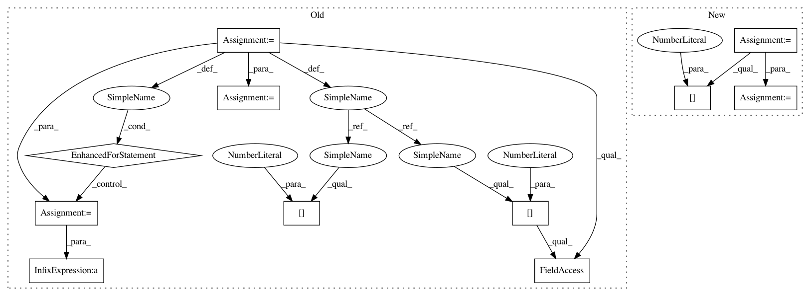

348122d499073a7a58b21d6e5544bc4b47a9ee94,gpytorch/lazy/kronecker_product_added_diag_lazy_tensor.py,KroneckerProductAddedDiagLazyTensor,inv_quad,#KroneckerProductAddedDiagLazyTensor#Any#Any#,115
Before Change
def inv_quad(self, tensor, reduce_inv_quad=True):
// TODO: check stability of numerics here
svd_list = self._kron_svd()
noise = self._diag_tensor[0, 0]
v_matrix = _DiagKroneckerProdLazyTensor(DiagLazyTensor(svd_list[0].S), DiagLazyTensor(svd_list[1].S))
q_matrix = KroneckerProductLazyTensor(lazify(svd_list[0].U), lazify(svd_list[1].U))
for sub_ind in range(2, len(svd_list)):
v_matrix = KroneckerProductLazyTensor(v_matrix, DiagLazyTensor(svd_list[sub_ind].S))
q_matrix = KroneckerProductLazyTensor(q_matrix, DiagLazyTensor(svd_list[sub_ind].S))
// TODO: this could be a memory hog.
inv_mat = DiagLazyTensor(v_matrix.diag() + noise)
res = q_matrix.t().matmul(tensor)
res = inv_mat.inverse().matmul(res)
After Change
def inv_quad(self, tensor, reduce_inv_quad=True):
// TODO: check stability of numerics here
q_matrix = KroneckerProductLazyTensor(*[lazify(eig_decomp[1]) for eig_decomp in self._eig_cache])
inv_mat = DiagLazyTensor(1.0 / (self._kron_eigenvalues.diag() + self._diag_tensor.diag()))
res = q_matrix.t().matmul(tensor)
res = inv_mat.inverse().matmul(res)
In pattern: SUPERPATTERN
Frequency: 3
Non-data size: 11
Instances
Project Name: cornellius-gp/gpytorch
Commit Name: 348122d499073a7a58b21d6e5544bc4b47a9ee94
Time: 2020-06-26
Author: wjm363@nyu.edu
File Name: gpytorch/lazy/kronecker_product_added_diag_lazy_tensor.py
Class Name: KroneckerProductAddedDiagLazyTensor
Method Name: inv_quad
Project Name: pytorch/examples
Commit Name: 8a70c277c355fe734a01fe58baafdc2dc5164205
Time: 2016-12-29
Author: alerer@fb.com
File Name: OpenNMT/train.py
Class Name:
Method Name: eval
Project Name: cornellius-gp/gpytorch
Commit Name: 348122d499073a7a58b21d6e5544bc4b47a9ee94
Time: 2020-06-26
Author: wjm363@nyu.edu
File Name: gpytorch/lazy/kronecker_product_added_diag_lazy_tensor.py
Class Name: KroneckerProductAddedDiagLazyTensor
Method Name: inv_quad